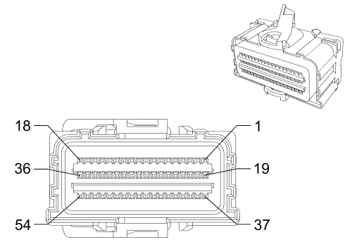

Captiva |
||||||||
|
|
|
|||||||
|
 |
Información de parte de conector
| Información de parte de terminal
|
Bulón | Tamaño | Color | Circuito | Función | Opción |
|---|---|---|---|---|---|
1-8 | -- | -- | -- | No se utiliza | -- |
9 | 0,5 | L-BU | 3481 | Control alto del pretensor de anclaje del cinturón del conductor | -- |
10 | 0,5 | D-GN | 3482 | Control alto del pretensor de anclaje del cinturón del conductor | -- |
11 | 0,5 | D-GN/WH | 3480 | Pretensor de anclaje del cinturón de seguridad del acompañante - Control bajo | -- |
12 | 0,5 | BN | 3479 | Pretensor de anclaje del cinturón de seguridad del acompañante - Control alto | -- |
13 | 0.3 | L-BU | 3068 | Módulo de colisión en el lado del conductor, control alto | -- |
14 | 0.3 | L-GN/BK | 3069 | Módulo de colisión en el lado del conductor, control bajo | -- |
15 | 0.3 | TN/BK | 3067 | Módulo de colisión en el lado del pasajero, control bajo | -- |
16 | 0.3 | PU | 3066 | Módulo de colisión en el lado del acompañante, control alto | -- |
17 | 0,5 | PU/WH | 5019 | Control alto del módulo de la cortina superior delantera izquierda | -- |
18 | 0,5 | PK | 5020 | Control bajo del módulo de la cortina superior delantera izquierda | -- |
19 | 0,5 | D-GN | 2105 | Control alto del módulo de colisión en el lado izquierdo | -- |
20 | 0,5 | BN | 2106 | Control bajo del módulo de colisión en el lado izquierdo | -- |
21 | 0,5 | D-BU | 2104 | Control bajo del módulo de colisión en el lado derecho | -- |
22 | 0,5 | GY | 2103 | Control alto del módulo de colisión en el lado derecho | -- |
23 | 0.3 | YE/BK | 6169 | Señal del módulo de detección de impactos delantero central | -- |
24 | 0.3 | PK | 6170 | Referencia baja del sensor de bobina de compensación | -- |
25-36 | -- | -- | -- | No se utiliza | -- |
37 | 0,5 | TN/WH | 3477 | Control alto del pretensor de retractor del cinturón del conductor | -- |
38 | 0,5 | PK/BK | 3478 | Control alto del pretensor de retractor del cinturón del conductor | -- |
39 | 0,5 | PK | 3476 | Control alto del pretensor de retractor del cinturón del pasajero | -- |
40 | 0,5 | L-GN | 3475 | Control alto del pretensor de retractor del cinturón del pasajero | -- |
41 | 0.3 | TN/WH | 238 | Señal del interruptor del cinturón de seguridad del conductor | -- |
42 | -- | -- | -- | No se usa | -- |
43 | 0.3 | PK | 5057 | Referencia baja del interruptor de posición del asiento | -- |
44 | 0.3 | PK | 5057 | Referencia baja del interruptor de posición del asiento | -- |
45 | 0.3 | OG | 1362 | Señal del interruptor del cinturón de seguridad del acompañante | -- |
46 | -- | -- | -- | No se usa | -- |
47 | 0.3 | OG/BK | 7571 | Señal de aviso del cinturón de seguridad del acompañante | -- |
48-52 | -- | -- | -- | No se usa | -- |
53 | 0,5 | YE/BK | 5021 | Control alto del módulo de la cortina superior delantera derecha | -- |
54 | 0,5 | WH/BK | 5022 | Control bajo del módulo de la cortina superior delantera derecha | -- |
| © Copyright Chevrolet Europe. All rights reserved |